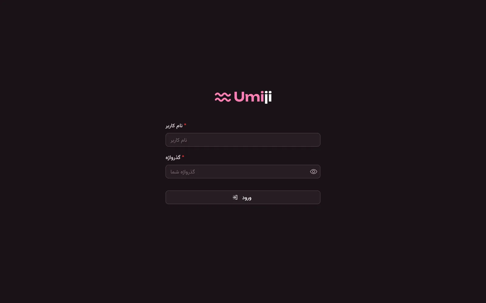
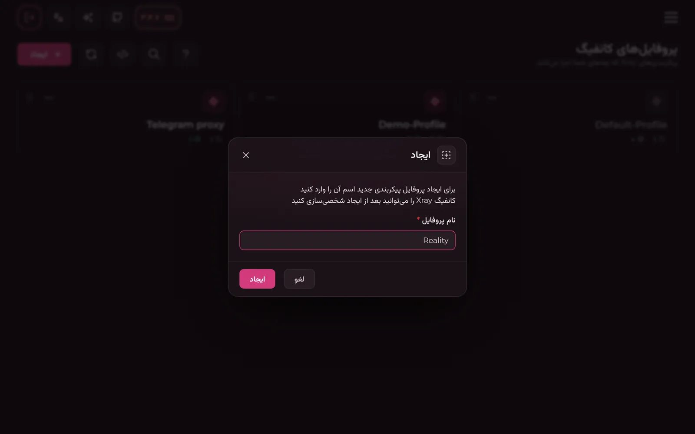
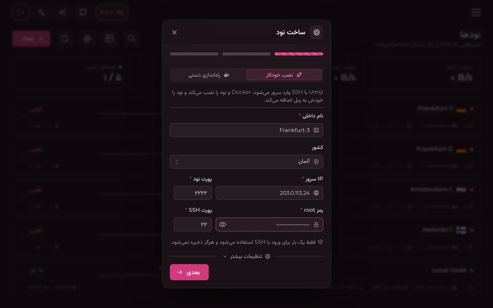
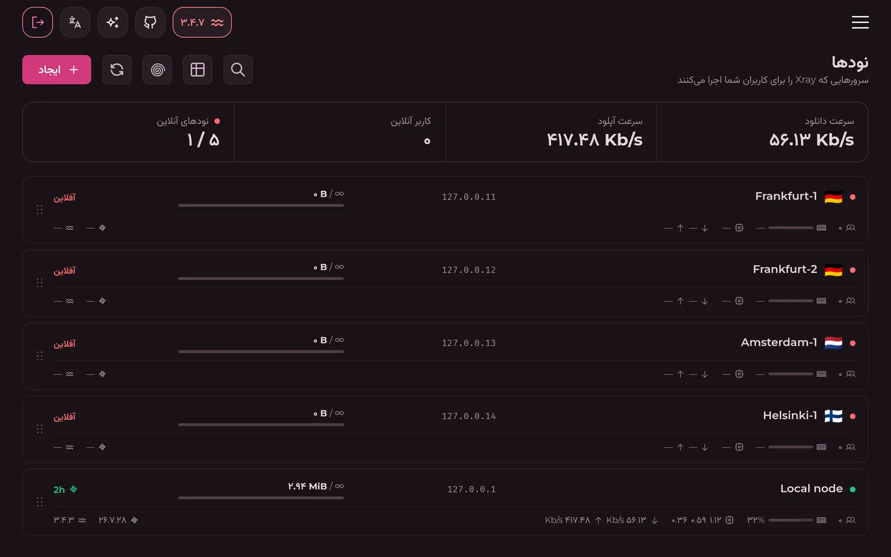
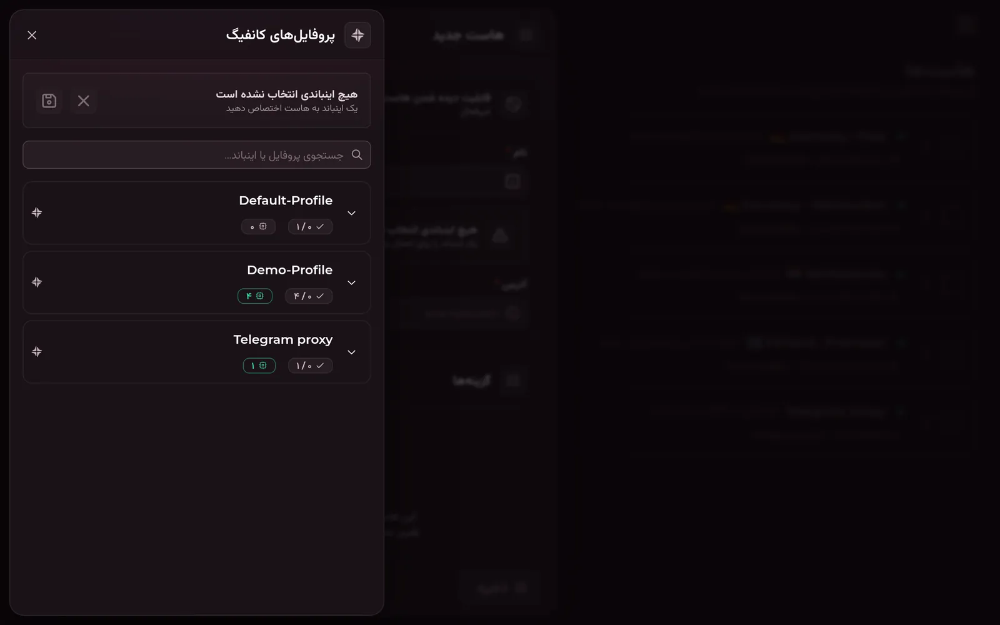
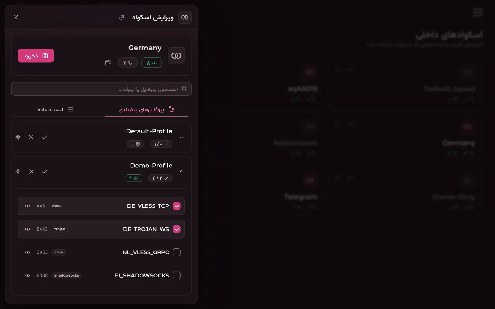
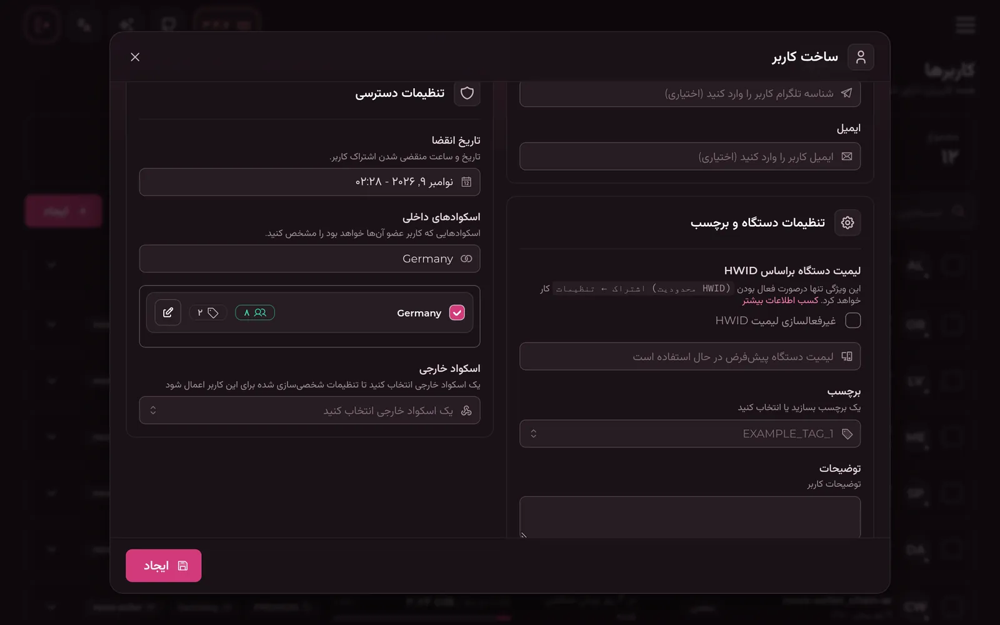
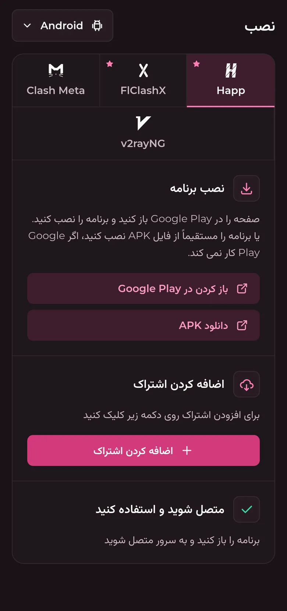

نصب پنل
Umiji داخل Docker اجرا میشود. ایمیجها را روی کامپیوتر خودتان میسازید و اسکریپت دیپلوی آنها را از طریق SSH به سرور میفرستد، پس سرور فقط به Docker نیاز دارد. راهنمای کامل، با همهی تنظیمات، در DEPLOY.md (به انگلیسی) آمده است. نسخهی کوتاهش این است.
چه چیزهایی لازم دارید
- یک سرور برای پنل، با Ubuntu یا Debian و دسترسی SSH با کاربر root و کلید.
- یک سرور برای اولین نودتان. ترافیک کاربرانتان از این سرور عبور میکند.
- دو دامنه: یکی برای پنل، مثل
panel.example.com، و یکی برای صفحهی اشتراک، مثلsub.example.com. اول رکورد A هر دو را روی IP سرور پنل بگذارید، چون گواهیهای HTTPS به آنها نیاز دارند. - کامپیوتر خودتان، با Linux یا macOS، که Docker، Node.js نسخهی 24 یا بالاتر،
git،zip،python3،opensslوsshرویش نصب باشد.
دیپلوی
# روی کامپیوتر خودتان: یک بار کد را بگیرید
git clone https://github.com/therewasluna/umiji-backend.git
git clone https://github.com/therewasluna/umiji-frontend.git
git clone https://github.com/therewasluna/umiji-subscription-page.git
cd umiji-backend
# سرویسها را روی سرور میگذارد و پوشهی /opt/umiji را میسازد
tools/deploy.sh init root@203.0.113.10
روی سرور، فایلهای /opt/umiji/.env، panel.env و
subpage.env را پر کنید. یک کلید مخفی تصادفی برای برنامه و رمز پایگاه داده از قبل
در آنها گذاشته شده است. اگر HTTPS داخلی را که پایینتر آمده میخواهید، همین حالا آن را در .env
تنظیم کنید. بعد همهچیز را بسازید و اجرا کنید:
# روی کامپیوتر خودتان
tools/deploy.sh up root@203.0.113.10HTTPS: داخلی، یا nginx خودتان
پنل و صفحهی اشتراک فقط روی خود سرور گوش میدهند، روی 127.0.0.1:3000 و
127.0.0.1:3010، و پنل فقط از راه HTTPS جواب میدهد. یکی از دو راه زیر را برای در دسترس
گذاشتن آنها انتخاب کنید. در هر دو راه، بازدیدکننده نمیتواند به پنل IP دروغین نشان دهد؛ محدودیت
تلاشهای ورود و سابقههای IP پنل به همین وابستهاند.
Caddy داخلی راه سریع برای سروری است که فقط Umiji را اجرا میکند. Caddy پورتهای 80 و
443 را برمیدارد و گواهیها را خودش میگیرد و تمدید میکند. اینها را پیش از اجرای
up در /opt/umiji/.env بگذارید، یا بعد از تغییرشان روی سرور ./up.sh
را اجرا کنید:
COMPOSE_PROFILES=panel,subpage,caddy
CADDY_PANEL_DOMAIN=panel.example.com
CADDY_SUBPAGE_DOMAIN=sub.example.com
هر دو دامنه باید از قبل به همین سرور اشاره کنند، و هیچ وبسرور دیگری نباید روی آن اجرا شود. دستور
docker compose logs -f umiji-caddy در /opt/umiji رسیدن هر گواهی را نشان میدهد.
nginx خودتان برای سروری مناسب است که سایتهای دیگری هم دارد. caddy را در
COMPOSE_PROFILES نگذارید، و بعد روی سرور:
-
nginx و certbot را نصب کنید. اگر فایروال روشن است، پورتهای وب را باز کنید. پورتهای 3000، 3001 و
3010 را بسته نگه دارید: فقط nginx باید به آنها برسد.
apt install -y nginx certbot python3-certbot-nginx # فقط اگر ufw status بگوید active ufw allow 'Nginx Full' -
فایل
/etc/nginx/sites-available/umijiرا با دامنههای خودتان بنویسید. روی سروری که فقط یکی از دو برنامه را اجرا میکند، فقط بلوکserverهمان را نگه دارید، و اگر پنل است هر دوmapرا هم.map $http_upgrade $connection_upgrade { default upgrade; '' close; } # پنل IP بازدیدکننده را از X-Umiji-Real-IP میخواند، پس nginx خودش آن را مینویسد و هرچه بازدیدکننده فرستاده نادیده میگیرد. map $remote_addr $umiji_real_ip { default $remote_addr; # صفحهی اشتراکی که روی سرور دیگری است و از راه https://panel.example.com به پنل وصل میشود، # IP بازدیدکنندههای خودش را میفرستد. با IP همان سرور به آن اعتماد کنید: # 203.0.113.20 $http_x_umiji_real_ip; } # پنل server { listen 80; server_name panel.example.com; # عکسهای پیام همگانی ربات تا 10 مگابایتاند. client_max_body_size 20m; # لینکهای backend-tools یک توکن کوتاهعمر در آدرس دارند. location ^~ /api/backend-tools { access_log off; proxy_pass http://127.0.0.1:3000; proxy_http_version 1.1; proxy_set_header Host $host; proxy_set_header Upgrade $http_upgrade; proxy_set_header Connection $connection_upgrade; proxy_set_header X-Real-IP $remote_addr; proxy_set_header X-Umiji-Real-IP $umiji_real_ip; proxy_set_header X-Forwarded-For $proxy_add_x_forwarded_for; proxy_set_header X-Forwarded-Proto $scheme; } location / { proxy_pass http://127.0.0.1:3000; proxy_http_version 1.1; proxy_set_header Host $host; proxy_set_header Upgrade $http_upgrade; proxy_set_header Connection $connection_upgrade; proxy_set_header X-Real-IP $remote_addr; proxy_set_header X-Umiji-Real-IP $umiji_real_ip; proxy_set_header X-Forwarded-For $proxy_add_x_forwarded_for; proxy_set_header X-Forwarded-Proto $scheme; } } # صفحهی اشتراک server { listen 80; server_name sub.example.com; location / { proxy_pass http://127.0.0.1:3010; proxy_http_version 1.1; proxy_set_header Host $host; proxy_set_header X-Real-IP $remote_addr; proxy_set_header X-Forwarded-For $proxy_add_x_forwarded_for; proxy_set_header X-Forwarded-Proto $scheme; } } -
فایل را فعال کنید و گواهیها را بگیرید. certbot تنظیمات HTTPS و انتقال از http به https را به همین
فایل اضافه میکند و گواهیها را خودش تمدید میکند.
ln -s /etc/nginx/sites-available/umiji /etc/nginx/sites-enabled/ rm -f /etc/nginx/sites-enabled/default nginx -t && systemctl reload nginx # فقط دامنههای همین سرور certbot --nginx -d panel.example.com -d sub.example.com # بررسی میکند که تمدید کار میکند certbot renew --dry-run - آدرس
https://panel.example.comرا باز کنید. تا وقتی certbot اجرا نشده، باز نمیشود، چون پنل http ساده را رد میکند.
کار این تنظیمات: هدر X-Umiji-Real-IP آدرس IP بازدیدکننده را به پنل میرساند، و nginx همیشه
خودش آن را مینویسد، پس کسی نمیتواند مقدار دلخواهش را بفرستد. پنل درخواستهای بدون
X-Forwarded-For و X-Forwarded-Proto را رد میکند. هدرهای Upgrade
ترمینال SSH را میرسانند، و client_max_body_size برای عکسهای پیام همگانی جا باز میکند.
پشت CDN، مثلاً ابر نارنجی Cloudflare، حالت SSL را در Cloudflare روی
Full (strict) بگذارید. بعد رنجهای IP آن CDN را به پراکسی معرفی کنید، وگرنه همهی
بازدیدکنندهها از IPهای CDN میرسند و همه در یک محدودیت ورود شریک میشوند. با Caddy آنها را در
CADDY_TRUSTED_PROXIES بنویسید، با فاصله از هم و داخل گیومهی انگلیسی (")، و گزینهی Always Use HTTPS را در Cloudflare
خاموش کنید تا تمدید گواهی همچنان به Caddy برسد. با nginx این را بالای فایل اضافه کنید، برای هر رنج از
cloudflare.com/ips یک خط:
set_real_ip_from 173.245.48.0/20;
set_real_ip_from 2400:cb00::/32;
# …بقیهی رنجها
real_ip_header X-Forwarded-For;
real_ip_recursive on;نودهای پشت CDN برای لیمیت IP تنظیم جداگانهای لازم دارند: لیمیت IP پشت CDN را ببینید.
در اولین اجرا، هشداری میگوید subpage.env مقدار UMIJI_API_TOKEN ندارد. این طبیعی است. توکن را در قدم بعد میسازید.
ورود و وصل کردن صفحهی اشتراک
https://panel.example.comرا باز کنید. اولین حسابی که ثبت کنید ادمین میشود، پس همین حالا این کار را بکنید.- متن سلب مسئولیت را که در اولین بازدید نشان داده میشود بخوانید و متوجه شدم و میپذیرم را بزنید.
- منو را باز کنید، به تنظیمات Umiji بروید، بخش توکنهای API را پیدا کنید و یک توکن بسازید. همین حالا کپیاش کنید: فقط یک بار نشان داده میشود.
- روی سرور، توکن را در
subpage.envبهعنوان مقدارUMIJI_API_TOKENبگذارید و./up.shرا اجرا کنید.

https://sub.example.com/ بهتنهایی چیزی نشان نمیدهد. این طبیعی است: صفحهی اشتراک فقط به لینکهای اشتراک واقعی جواب میدهد، که در قدم 9 به آنها میرسید.
ساختن پروفایل کانفیگ
پروفایل کانفیگ همان تنظیمات Xray است که نودهایتان اجرا میکنند. بیشتر راهاندازیها فقط یکی لازم دارند. پروفایل، اینباندها را در خود دارد: پورتهایی که کاربرانتان به آنها وصل میشوند.
- به پروفایلهای کانفیگ بروید و ایجاد را بزنید.
- یک نام وارد کنید، مثل
Reality، و ایجاد را بزنید. - پروفایل تازه را باز کنید. در ویرایشگر بصری باز میشود، با بخشهایی برای اینباندها، اوتباندها، مسیریابی و بقیه.

افزودن اینباند VLESS با REALITY
VLESS با REALITY انتخاب خوبی برای اولین اینباند است. نه گواهی میخواهد و نه دامنهی جداگانه، و برای هر کسی که ترافیک را زیر نظر دارد، شبیه بازدید از یک وبسایت واقعی است.
- در بخش اینباندها، اینباند جدید را بزنید.
- VLESS را انتخاب کنید. اینباند با REALITY روی TCP خام و پورت 2083 اضافه میشود و یک نقطهی قرمز نشان میدهد چه چیزی هنوز باید پر شود.


- زبانهی امنیت را باز کنید. Private key و یک Short ID از قبل برایتان ساخته شدهاند.
- در Target، یک سایت HTTPS واقعی را که مال شما نیست با پورتش وارد کنید، مثل
www.example.org:443. REALITY از TLS همان سایت استفاده میکند. - در Server names، دامنهی همان سایت را وارد کنید، مثل
www.example.org. - ذخیره را بزنید. اگر پورت باید چیز دیگری باشد، اول آن را در زبانهی عمومی عوض کنید.

نام فیلدهای ویرایشگر، مثل خود Xray، انگلیسی است. یک هستهی واقعی Xray در مرورگرتان هر تغییر را بررسی میکند، پس اشتباههای تایپی پیش از ذخیره معلوم میشوند. اگر JSON خام را ترجیح میدهید، به زبانهی JSON بروید. هر دو نما یک کانفیگ را ویرایش میکنند.
افزودن نود
نود سروری است که Xray را با پروفایل شما اجرا میکند. Umiji میتواند آن را از طریق SSH برایتان نصب کند.
- به نودها بروید و ایجاد را بزنید. نصب خودکار از قبل انتخاب شده است.
- نام داخلی، کشور (پرچمش در فهرست نودها دیده میشود)، IP سرور و رمز root سرور را وارد کنید. پورت نود را روی 2222 بگذارید، مگر اینکه این پورت روی سرور اشغال باشد.
- بعدی را بزنید. در پیکربندی هسته، پروفایلتان را انتخاب کنید و اینباند قدم 4 را تیک بزنید.
- نصب نود را بزنید و مراحل را دنبال کنید: SSH، Docker، کانتینر نود و در آخر ارتباط با پنل.

دو پورت را روی فایروال نود باز کنید: پورت نود (2222) تا پنل به نود برسد، و پورت اینباند (2083) تا کاربرانتان برسند. اگر نصب با پیام «نود اجرا شده ولی پنل به آن دسترسی ندارد» تمام شد، پورت نود بسته است.
ترجیح میدهید خودتان نصب کنید؟ راهاندازی دستی را انتخاب کنید. پنل یک
docker-compose.yml نشان میدهد که آن را روی نود کپی میکنید، و بعد صبر میکند تا
Xray بالا بیاید.

ساختن هاست
اینباند سمت سرور است. هاست چیزی است که کاربران در برنامهشان میبینند: یک نام و آدرسی برای اتصال.
- به هاستها بروید و ایجاد را بزنید.
- قابلیت دیده شدن هاست را روشن کنید تا هاست در اشتراکها فرستاده شود.
- در نام، اسمی را بنویسید که کاربران میبینند. اگر آن را با ایموجی پرچم شروع کنید، مثل «🇩🇪 آلمان»، برنامهها پرچم را نشان میدهند.
- روی هیچ اینباندی انتخاب نشده است بزنید، پروفایلتان را باز کنید و اینباند قدم 4 را انتخاب کنید. انتخاب را با آیکون دیسک ذخیره کنید.
- در آدرس، IP نود یا دامنهای را که به آن اشاره میکند وارد کنید. پورت را روی پورت اینباند بگذارید و بعد ذخیره را بزنید.


بقیهی تنظیمات، مثل بازنویسی SNI یا مخفی کردن هاست، در گزینهها هستند. هاست تازه بدون هیچکدام از آنها هم کار میکند.
ساختن اسکواد داخلی
اسکواد داخلی تعیین میکند کاربرانش از کدام اینباندها استفاده کنند. هر کاربر فقط هاستهای اینباندهایی را میگیرد که در اسکوادهای خودش هستند.
- به اسکوادهای داخلی بروید، ایجاد را بزنید و برایش نام بگذارید، مثل
Germany. - اسکواد را باز کنید. پروفایلتان را باز کنید و اینباند قدم 4 را تیک بزنید. دکمههای ✓ و ✕ همهی اینباندهای یک پروفایل را یکجا انتخاب یا پاک میکنند.
- ذخیره را بزنید.

ساختن کاربر
- به کاربرها بروید و ایجاد را بزنید.
- یک نام کاربر وارد کنید. بعداً قابل تغییر نیست.
- محدودیت ترافیک را تعیین کنید (0 یعنی نامحدود) و در دوره بازنشانی ترافیک مشخص کنید هر چند وقت یک بار صفر شود.
- تاریخ انقضا را انتخاب کنید. دکمههای سریع یک ماه، سه ماه یا یک سال اضافه میکنند.
- در اسکوادهای داخلی، اسکواد قدم 7 را تیک بزنید و بعد ایجاد را بزنید.


اتصال از گوشی
اگر لینک در مرورگر باز شود، صفحهی اشتراک را نشان میدهد: چقدر ترافیک مانده است، و نصب یک برنامه را قدمبهقدم به کاربر نشان میدهد.
- لینک را روی گوشی باز کنید. صفحه خودش پلتفرم را تشخیص میدهد. اگر لازم بود، آن را از منوی پلتفرم کنار عنوان «نصب» عوض کنید.
- یک برنامه انتخاب کنید، مثل Happ یا v2rayNG، و با دکمههای بخش نصب برنامه نصبش کنید.
- اضافه کردن اشتراک را بزنید. برنامه باز میشود و اشتراک به آن اضافه شده است.
- هاست «🇩🇪 آلمان» را انتخاب کنید و وصل شوید.


در پنل، ردیف کاربر حالا مصرف ترافیک را نشان میدهد و نود یک کاربر آنلاین دارد. اگر برنامه وصل نشد، پورت اینباند را روی فایروال نود بررسی کنید و مطمئن شوید آدرس و پورت هاست با نود یکی است.
سرویس شما راه افتاد.
یک پروفایل، یک نود، یک هاست، یک اسکواد و یک کاربر، که از اول تا آخر کار میکنند. قدمهای بعدی: